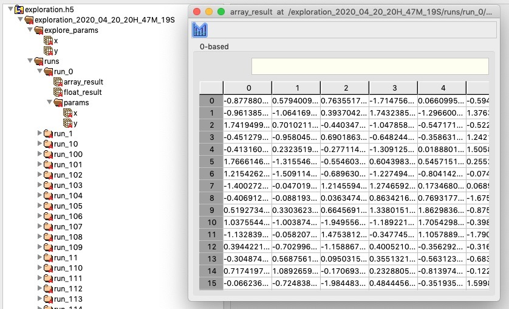

mopet 🛵
The mildly ominous parameter exploration toolkit
Isn't it strange that, although parameter explorations are a crucial part of computational modeling, there are almost no Python tools available for making your life easier?
mopet is here to help! You can run extensive grid searches in parallel (powered by ray) and store extremely huge amounts of data into a HDF file (powered by pytables) for later analysis - or whatever your excuse is for buying yet another hard disk.
Installation 💻
The easiest way to get going is to install the pypi package using pip:
pip install mopet
git clone https://github.com/caglorithm/mopet.git
cd mopet/
pip install -r requirements.txt
pip install .
Example usage 🐝
Setting up an exploration is as easy as can be!
# first we define an toy evaluation function
def distance_from_circle(params):
# let's simply calculate the distance of
# the x-y parameters to the unit circle
distance = abs((params["x"] ** 2 + params["y"] ** 2) -
# we package the result into a dictionary
result = {"result" : distance}
return result
Let's set up the exploration by defining the parameters to explore and passing the evaluation function from above:
import numpy as np
import mopet
explore_params = {"x": np.linspace(-2, 2, 21), "y": np.linspace(-2, 2, 21)}
ex = mopet.Exploration(distance_from_circle, explore_params)
Running the exploration is in parallel and is handled by ray. You can also use a private cluster or cloud infrastructure, see here for more info.
ex.run()
>> 100%|██████████| 441/441 [426.57it/s]
After your exploration has finished, you will find a file exploration.h5 in your current directory with all the runs, their parameters and their outputs, neatly organized. If you open this file (with HDFView for example), you'll see something like this:

Loading exploration results
You can load the exploration results using
ex.load_results(all=True)
Note that using all=True will load all results into memory (as opposed to just the parameters of each run). Please make sure that you have enough free memory for this since your simulation results could be huge. If you do not want this, you can load individual results using their run_id (which is an integer counting up one per run):
ex.get_run(run_id=0)
After using ex.load_results(), an overview of all runs and their parameters is given as a pandas DataFrame, available as ex.df. Using ex.load_results() with the default parameters will automatically aggregate all scalar results into this table, like distance in our example above, which is a float.
Using some fancy pivoting, we can create a 2D matrix with the results as entries
pivoted = ex.df.pivot_table(values='result', index = 'y', columns='x', aggfunc='first')

Let's plot the results!
import matplotlib.pyplot as plt
plt.imshow(pivoted, \
extent = [min(ex.df.x), max(ex.df.x),
min(ex.df.y), max(ex.df.y)], origin='lower')
plt.colorbar(label='Distance from unit circle')
plt.xlabel("x")
plt.ylabel("y")

More information 📓
Inspired by 🤔
mopet is inspired by pypet, a wonderful python parameter exploration toolkit. I have been using pypet for a very long time and I'm greatful for its existence! Unfortunately, the project is not maintained anymore and has run into several compatibility issues, which was the primary reason why I built mopet.
Built With 💞
mopet is built on other amazing open source projects:
ray- A fast and simple framework for building and running distributed applications.pytables- A Python package to manage extremely large amounts of data.tqdm- A Fast, Extensible Progress Bar for Python and CLIpandas- Flexible and powerful data analysis / manipulation library for Pythonnumpy- The fundamental package for scientific computing with Python